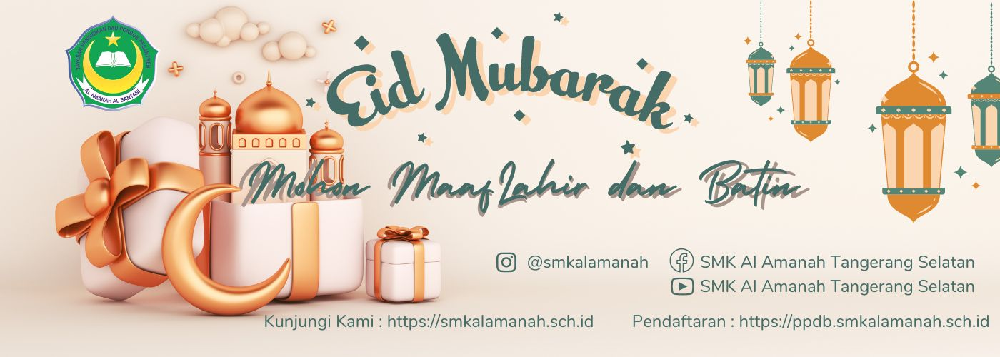
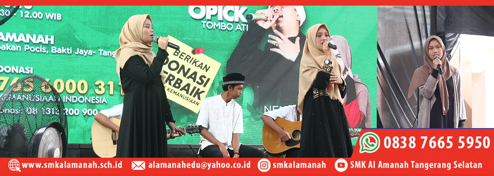

-

-

-

-

Sejarah Singkat
SMK Al Amanah (Al Amanah The Vocatinal School) yang dikenal dengan alamanah vocis adalah sebuah lembaga pendidikan kejuruan di bawah naungan Yayasan Pondok Pesantren dan Pendidikan Al Amanah Al Bantani.
Pada tahun pelajaran 1996/1997 Yayasan Pondok Pesantren dan Pendidikan Al Amanah Al Bantani, (dahulu YPP Al Amanah) membuka Sekolah menengah kejuruan dengan program keahlian Sekretaris dan Akuntansi. Adapun izin operasional diperoleh dari kanwil depdikbud (sekarang kemendiknas) melalui SK Kakanwil Depdikbud Provinsi Jawa Barat nomor 325/102.1/Kep/05/1997.
Pada tahun 2000, SMK Al Amanah meraih status diakui berdasarkan SK Kakanwil Depdiknas Provinsi Jawa Barat nomor, 068/102.8h/2000.
Minat masyarakat untuk menyekolahkan putra/putri nya di SMK Al Amanah mendapatkan predikat baik. Menyikapi kepercayaan masyarakat, maka SMK Al Amanah berusaha mendidik siswa nya agar setelah menyelesaikan pendidikan di SMK Al Amanah para alumnus benar benar layak untuk memasuki dunia usaha maupun berwirausaha sendiri. Program diklat di SMK Al Amanah ditekankan mengikuti perkembangan teknologi, misalnya penyesuaian software yang dipelajari dengan software yang akan digunakan siswa dalam bekerja selepas mereka lulus, penggunaan alat alat yang serupa dengan alat alat di dunia usaha nantinya. Sampai saat ini SMK Al Amanah Vocis sudah memilik beberapa program keahlian yang dapat dipelajari oleh para siswa, yaitu : Administrasi Perkantoran Akuntansi Pemasaran Rekayasa Perangkat Lunak Perbankan Syariah Kurikulum yang digunakan di SMK Al Amanah saat ini adalah kurikulum perpaduan antara Kurikulum KTSP dan Kurikulum 2013 Revisi 2013, dan juga kurikulum yayasan berkenaan dengan mata pelajaran rohani, yaitu penambahan mata diklat fiqih, ekonomi islam, kajian al quran dan hadits.

Rekayasa perangkat lunak adalah salah satu bidang keilmuan atau profesi yang berfokus pada produksi dan pengembangan perangkat lunak. Rekayasa perangkat lunak dalam bahasa Inggris dikenal dengan istilah software.
Baca selengkapnya
Otomatisasi dan Tata Kelola Perkantoran adalah kompetensi keahlian pada Program Keahlian Manajemen Perkantoran yang menekankan pada keterampilan pengelolaan administrasi kepegawaian, keuangan, sarana prasarana serta humas dan keprotokolan.
Baca selengkapnya
Bisnis daring dan pemasaran adalah sebuah kompetensi keahlian pada bidang Sekolah Menengah Kejuruan Bisnis dan Manajemen yang mempelajari keilmuan dan praktik tentang bidang pemasaran dan pengembangan bisnis online melalui berbagai media, mulai media offline sampai dengan media Online
Baca selengkapnya
Menghasilkan lulusan untuk menjadi tenaga kerja akuntansi tingkat menengah yang mumpuni, sanggup mengerjakan pembukuan keuangan di perusahaan kecil maupun Nasional dan siap untuk mengembangkan sikap professional yang sesuai dengan tuntutan dunia usaha dunia industri.
Baca selengkapnya

Kompetensi Keahlian ini mempelajari bagaimana menganalisa dan membuat pembukuan keuangan suatu badan usaha, membuat deskripsi dan melakukan interpretasi terhadap permasalahan akuntansi, dan mampu menerapkannya dalam dunia perbankan.
Baca selengkapnya
Hanya dengan 1 Juta-an, bisa bersekolah di SMK Al Amanah
REKAYASA PERANGKAT LUNAK - OTOMATISASI & TATA KELOLA PERKANTORAN- BISNIS DARING & PEMASARAN - AKUNTANSI & KEUANGAN LEMBAGA - PERBANKAN SYARIAH (*syarat dan ketentuan berlaku)

SMK AL AMANAH MENJUARAI LKS BANTEN DAN AKAN BERLAGA DI LKS NASIONAL 2022
lomba Kompetensi Siswa adalah kompetisi tahunan antar siswa pada jenjang SMK sesuai bidang keahlian yang diajarkan pada SMK peserta, Lomba Kompetensi Siswa diadakan
.jpg)
INFORMASI PERUBAHAN TANGGAL MASUK KBM
Menindaklanjuti Pemberitahuan dari Dinas Pendidikan Provinsi Banten dan Surat Edaran Nomor :421/3184-Disdikbud Kota Tangerang Selatan Tentang pemberitahuan perubahan tanggal masuk KBM untuk tingkat
.jpg)
BUKA PUASA BERSAMA CIVITAS AKADEMI SMK AL AMANAH
Ramadhan tahun ini (1443 H) terasa istimewa di SMK Al Amanah. Sekolah kami kembali mengadakan kegiatan Ramadhan yang pada tahun sebelumnya tidak dapat

DZIKIR JUMAT PAGI MENYEJUKKAN BATIN & MENYEMANGATKAN RAGA
Pembiasaan adab Islami di SMK Al Amanah salah satunya adalah membiasakan siswa untuk melaksanakan dzikir Jum’at pagi. Sebelum memulai aktivitas belajarnya, siswa diwajibkan

SMK AL AMANAH MENJUARAI LKS TINGKAT PROVINSI BANTEN TAHUN 2021
Pelajar SMK Al Amanah Kota Tangerang Selatan sukses mengukir prestasi membanggakan pada ajang Lomba Kompetensi Siswa (LKS) SMK tingkat Provinsi Banten 2021. Setelah

SMK AL AMANAH MENJADI PUSAT KEUNGGULAN COE (CENTER OF EXCELLENCE)
SMK AL AMANAH MENJADI PUSAT KEUNGGULAN COE (CENTER OF EXCELLENCE)
SMK Al Amanah Kota Tangerang Selatan menerima program sekolah center of excellent (CoE). Program tersebut, merupakan program terbaru yang dicanangkan oleh pemerintah pusat

Kakomp. Akuntansi & Keuangan Lembaga
DJULIATI

Kaprog. Manajemen Perkantoran
ENDAH FINATARIANI, M.PD
Kakomp. Perbankan Syariah
HERNINTA DEFAYANTI, S.E.I
Kaprog. Manajemen Pemasaran
INDAYANI
Kaprog. Teknik Komputer Dan Informatika
MUHAMAD MAWAHIB
programing

Wakabid Kesiswaan
SAPTO SUDRATO
Bendahara Umum
HUFRON BAIDLOWI
Wakabid. Kurikulum
MASHURI, S.PD.
Setelah lulus pada tahun 2020, saya langsung dipercaya PT Prabuana Group melalui Bursa Kerja Khusus SMK Al Amanah. Saya bangga menjadi alumni SMK Al Amanah jurusan Akuntansi karena membentuk saya menjadi percaya diri dan disiplin.
Fani Marselina Admin KPR Perbankan Prabuana Gr
Saya alumni lulusan tahun 2018 Kompetensi Keahlian Perbankan Syariah. Setelah lulus saya dapat menyalurkan ilmu yang didapat di sekolah dengan bekerja di BMT Syahida Ikaluin melalui Bursa Kerja Khusus SMK Al Amanah. Saat ini saya juga sebagai mahasiswi dari Perguruan Tinggi Swasta dengan beasiswa 100%. Saya bersyukur menjadi bagian dari SMK Al Amanah.
Aulia Islamiyati BMT Syahida

Perkembangan Internet yang begitu pesat tentu banyak membawa dampak bagi dinamika masyarakat kita. Fenomena ini menjadi salah satu tantangan bagi dunia pendidikan kita, hingga saat ini pun dunia pendidikan kita sedang gencar-gencarnya mengembangkan pendidikan berbasis IT. Drs. ahmad muhroj –
Baca Selengkapnya
SMK Al Amanah adalah Sekolah Menengah Kejuruan dengan Akreditasi A di semua Bidang Keahlian. Kami berada di bawah naungan Yayasan Pendidikan dan Pondok Pesantren Al Amanah Al Bantani. Program Religi yang Rutin kami jalankan adalah Shalat Wajib Berja'maah, Dhuha, dan Tadarus Al Qur'an setiap hari.
Profil Kompetensi Keahlian Akuntansi


.png "web pendaftaran")